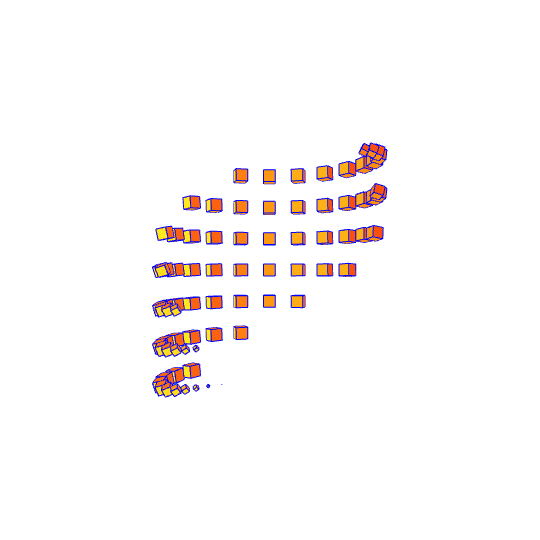

<div class="view-component">
  <div class="processing" *ngIf="processing" style="display: flex;justify-content: center;">
    
  </div>

  <div *ngIf="!processing && !readingFinish" class="still-process-message"
    style="width: 100%; height: 40px; display: block;width: 100%;text-align: center;margin-top: 10px;background: #989879;">
    <h1 style="font-size: 15px;">WE ARE STILL PROCESSING YOUR THERMOMETER "{{fileName}}"</h1>
    <h1 style="font-size: 15px;margin-top: -7px;">When thermometer process iS done, then details will save automatically
    </h1>
  </div>
  <div *ngIf="!processing && readingFinish" class="list-of-year">
    <div style="width: 40%; float: left;">
      <h1 style="font-size: 15px;margin-bottom: unset;margin-top: 2px;margin-left: 7px;">Process done and details saved</h1>
      <a style="margin-left: 7px;font-size: 12px;font-weight: bold;margin-top: 17px;color: darkred;cursor: pointer;" (click)="navigateToAllView('all_view')">View already uploaded thermometers</a>
      <a style="margin-left: 7px;font-size: 12px;font-weight: bold;margin-top: 17px;color: darkred;cursor: pointer;" (click)="navigateToAllView('home')">Upload new thermometer</a>
    </div>
    <select *ngIf="analyticsData && analyticsData.years" (change)="setSelectedYear($event.target.value)">
      <option *ngFor="let year of analyticsData.years" value="{{year}}">{{year}}</option>
    </select>
  </div>
  <div style="margin-top: 20px; overflow: unset !important;"
    *ngIf="!processing && selectedYear && daySpentChart && monthSpentChart">
    <highchart-component [day_spent_data]="daySpentChart" [mont_spent_data]="monthSpentChart"
      [finish_reading]="readingFinish"></highchart-component>
  </div>
</div>